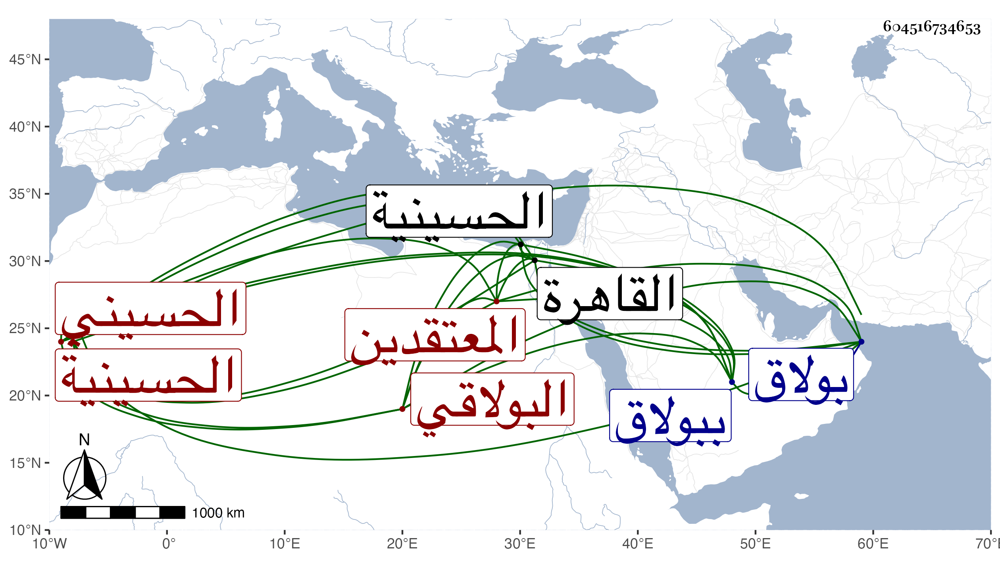

0902Sakhawi.DawLamic.ITO20230111-ara1.EIS1600.604516734653
Biography ID: 604516734653
284
أبو بكر الحسيني سكنا ثم البولاقي أحد المعتقدين . ذكره شيخنا في انبائه فقال أبو بكر المقيم ببولاق أحد من كان يعتقد كان مقيما بالحسينية ظاهر القاهرة ثم تحول إلى بولاق وبنيت له زاوية فاتفق أنه أمر بأن يبني له بها قبر فبنى فلما انتهت عمارته ضعف فمات فدفن فيه وذلك في المحرم سنة سبع وثلاثين وتحكى عنه كرامات ومكاشفات وكان في الغالب كأنه ثمل .
